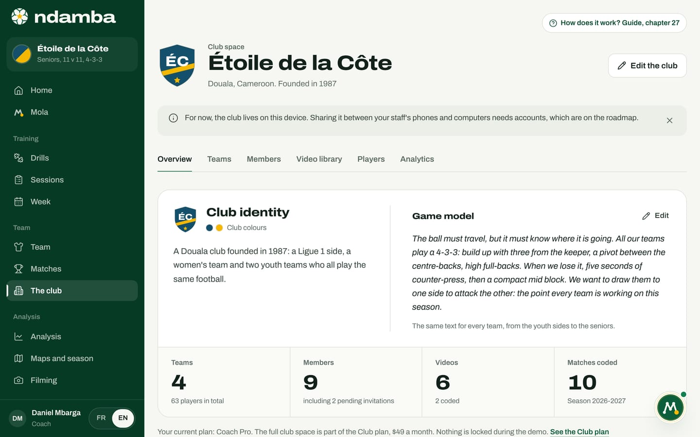
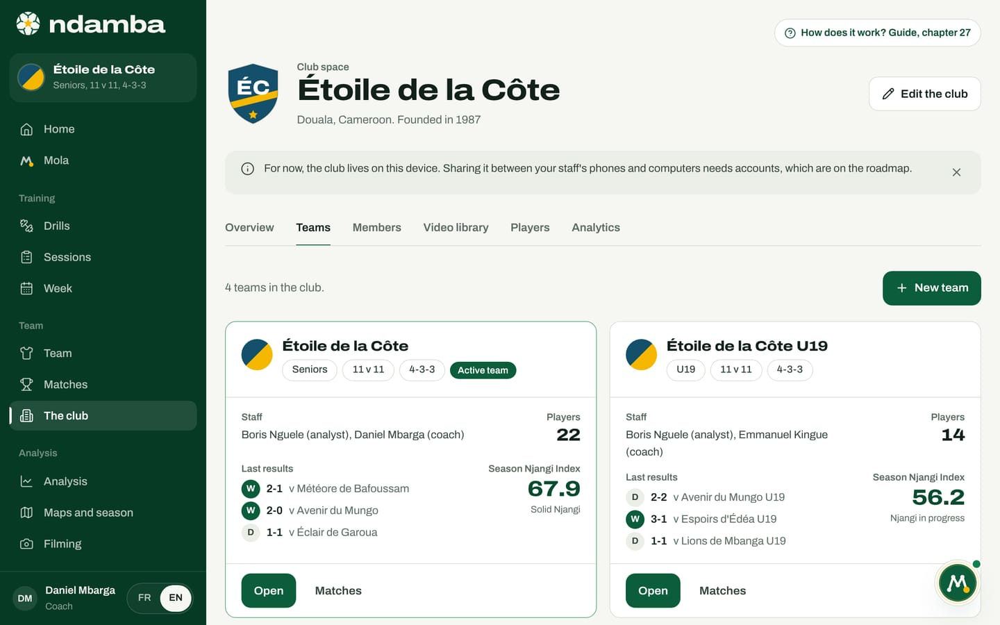
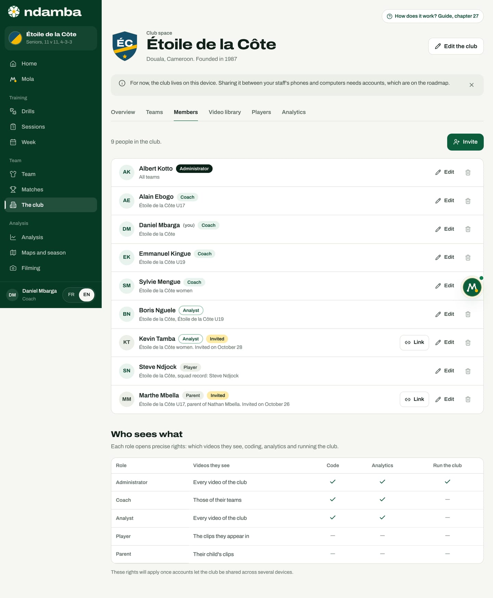
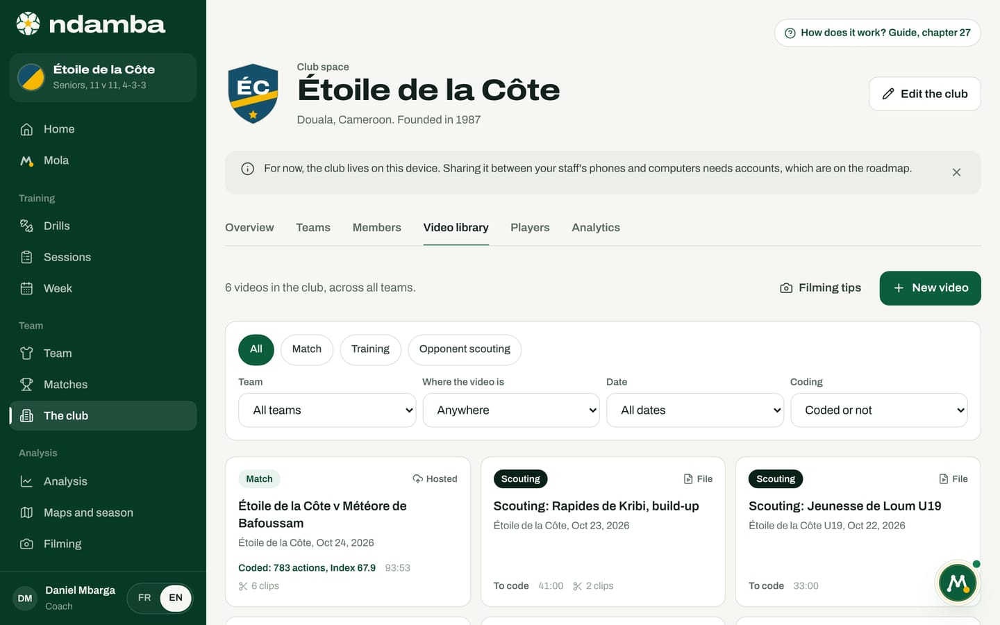
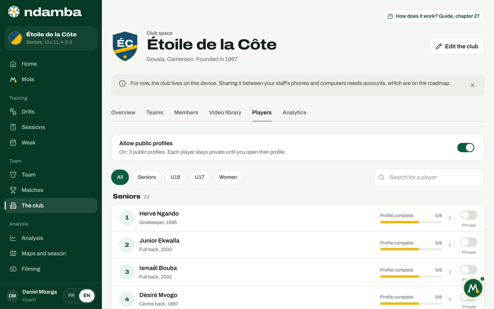
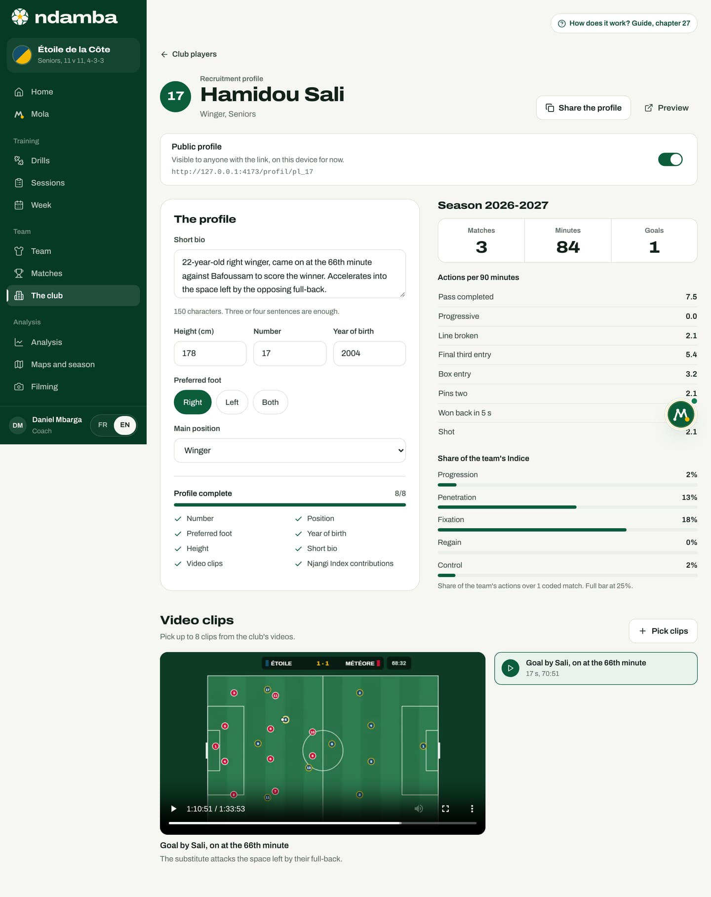
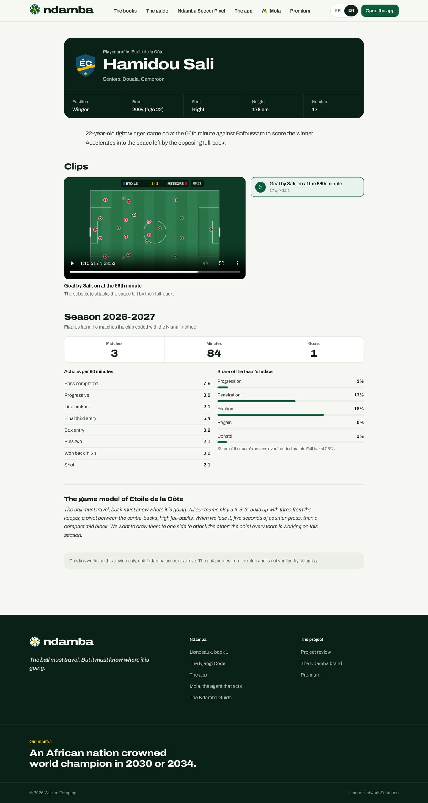
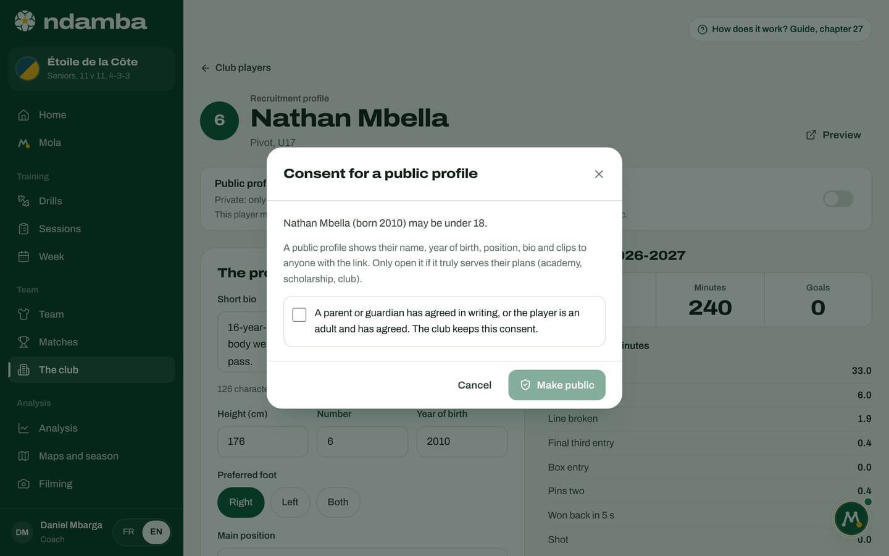
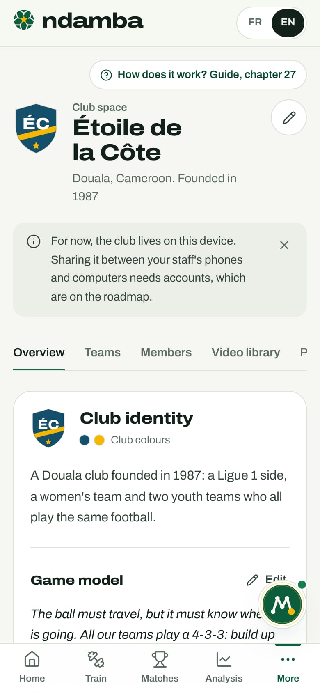

The club: teams, members, video library, recruitment
The club space brings every team together around one game model. Its six tabs (Overview, Teams, Members, Video library, Players, Analytics), the roles and their rights, the invitations you send yourself, recruitment profiles and their public page, the Club plan, and today’s limit: everything lives on the club’s device.
14 min read
An African club is almost never a single team: the first team, youth teams, often a women’s team, each with its own coach and its videos scattered across phones. Each age group ends up playing a different football, and a player who moves up from the U17s to the seniors has to learn everything again. The club space exists to do the opposite. It brings every team, the staff, the videos and the players’ profiles together around one text, the club’s game model, and one measure, the Njangi Index. At the scale of a club, it is the continuity this guide argues for at the scale of a country (chapter 22).
This chapter follows the club space of the pro club demo: Étoile de la Côte, in Douala, with its four teams, nine members and six videos.
Open the club space
In the menu, under Team, tap The club. On a phone it sits in the More panel. The address is /app/club.
If no club exists yet on this device, the page shows Bring your teams together in a club: "The club gathers all your teams, your staff, your videos and your players’ profiles, with one game model." Two buttons: Create the club, and Load the demo club when the pro club demo is open.
The Create the club window asks for:
- Club name (required), City, Country and Year founded.
- Main colour and Second colour: the crest draws itself from these colours and the club’s initials, and a box offers to give them to the teams you already have.
- About the club: who you are, in two sentences.
- Game model: "How all your teams play with the ball, without it, and in transition." Every team shares this text; it appears in the analysis and on public profiles.
The header then shows the crest, the name, the city and the year founded, and Edit the club. A note on a sand background states today’s rule: "For now, the club lives on this device. Sharing it between your staff’s phones and computers needs accounts, which are on the roadmap." The cross closes it for good on this device.
Six tabs follow: Overview, Teams, Members, Video library, Players and Analytics, each with its own address (/app/club/equipes, /app/club/membres, and so on).
Overview: the club at a glance


Club identity and Club colours show the crest and the description. In the demo: "A Douala club founded in 1987: a Ligue 1 side, a women’s team and two youth teams who all play the same football."
Game model, with its Edit link, is the heart of the page. The demo’s says, among other things: "All our teams play a 4-3-3: build up with three from the keeper, a pivot between the centre-backs, high full-backs. When we lose it, five seconds of counter-press, then a compact mid block." Under the text: "The same text for every team, from the youth sides to the seniors."
Four counters follow:
| Counter | Demo | What it counts |
|---|---|---|
| Teams | 4, "63 players in total" | Every team on the device |
| Members | 9, "including 2 pending invitations" | Staff, players and parents added to the club |
| Videos | 6, "2 coded" | Every video, across all teams |
| Matches coded | 10, "Season 2026-2027" | Matches played this season that have codes |
A line recalls the plan: "Your current plan: Coach Pro. The full club space is part of the Club plan, $49 a month. Nothing is locked during the demo.", with the link See the Club plan.
Last comes What each team needs next: one line per team, with its season Index and the next thing to do. That is adding the squad if the team has no players, "Code a first match, live or on video, to start the season’s Indice." if nothing is coded, or its weak point. In the demo all four teams share the same one: "Weak point of the season: Fixation (8.3 out of 20). One to work on this week." for the seniors, 7.0 for the U19s, 4.5 for the U17s and 9.0 for the women. That is exactly what the club’s model announces: "We want to draw them to one side to attack the other: the point every team is working on this season." The All teams link opens the next tab.
Teams: one card per age group


The tab opens with "4 teams in the club." and the New team button. Each card gives the age group, the format (11 v 11), the formation, the Active team badge on the team the rest of the app is showing, then:
- Staff: the members attached to the team with their role, and "invited" if they have not joined yet;
- Players: the size of the squad;
- Last results: the last three matches with a W, D or L pill, the score and the opponent;
- Season Indice and its band, worked out from the summed codes of every coded match of the season, never from an average.
| Team | Players | Season Index | Band |
|---|---|---|---|
| Étoile de la Côte (seniors) | 22 | 67.9 | Solid Njangi |
| Étoile de la Côte U19 | 14 | 56.2 | Njangi in progress |
| Étoile de la Côte U17 | 13 | 41.8 | Fragile purpose |
| Étoile de la Côte women | 14 | 62.5 | Njangi in progress |
Switching team from the club. Open makes the team active and opens its Team page; Matches makes it active and opens its matches. It is the same as Make active in Settings or the team plate at the top of the menu (chapter 6): the whole app switches to the chosen team, home, sessions, week and analysis included. A technical director goes from the U17s to the seniors in one tap.
Creating a team. New team ("In the club’s colours, with the same game model.") opens a short window: Team name, Age group, Format and Formation, then Create the team. The team takes the club’s colours.
Members: who belongs to the club


The tab says "9 people in the club." and offers Invite. Each row gives the initials, the name ("(you)" for your own profile), a role badge, the Invited badge until the person has joined, their teams, and for a player or a parent the linked squad record ("squad record: Steve Ndjock", "parent of Nathan Mbella"). On the right: Link for a pending invitation, Edit, and the bin. Removing someone asks for confirmation, Remove this member?: "Their videos and player data stay in place."
In the demo: an administrator, one coach per team, two analysts including one invited (Kevin Tamba), a player (Steve Ndjock) and an invited mother (Marthe Mbella, parent of Nathan Mbella in the U17s).
Roles and their rights
Under the list sits the Who sees what table: "Each role opens precise rights: which videos they see, coding, analytics and running the club."
| Role | Videos they see | Code | Analytics | Run the club |
|---|---|---|---|---|
| Administrator | Every video of the club | Yes | Yes | Yes |
| Coach | Those of their teams | Yes | Yes | No |
| Analyst | Every video of the club | Yes | Yes | No |
| Player | The clips they appear in | No | No | No |
| Parent | Their child’s clips | No | No | No |
The sentence under the table matters as much as the table: "These rights will apply once accounts let the club be shared across several devices." Today the table describes the club’s rules; it does not lock anything yet, since the whole club lives on one device.
Invite someone
- Tap Invite. The Invite to the club window opens.
- Enter the Full name (required) and, if you like, the Email, which is only used to prepare the message.
- Choose the Role. A sentence explains each one: "Codes and analyses the videos of their teams." for a coach, "Sees their child’s clips." for a parent.
- Tick the Teams concerned (an administrator has them all). For a player, choose their Squad record; for a parent, Their child. Choose later is allowed.
- Tap Create the invitation.
The Invitation for window follows, with the Invitation link in the form /rejoindre-club/ followed by a code, and three buttons: Copy the link, WhatsApp and Email. The rule is written at the top: "Send this link yourself, by WhatsApp, email or text message. Ndamba sends nothing on your behalf." The ready-made message reads, for example: "Hello Kevin, I’m inviting you to join Étoile de la Côte on Ndamba with the analyst role. Open this link on your phone: …"
What the link does today, the window says plainly: "For now, the link opens Ndamba on the person’s phone. Joining the club automatically will come with accounts: until then, mark the member as active once they have joined." On the club’s device, the /rejoindre-club/ page shows Invitation to Étoile de la Côte, who it is for, the role, and Open the club space; anywhere else, Invitation not found on this device. Once the person has joined, open Edit on their row and set their Status to Active. The Link button brings back the message of a pending invitation.
Video library: every video of the club


The video studio (chapter 29) works on one video at a time; the library shows them all. "6 videos in the club, across all teams." At the top, Filming tips opens the Film your matches page (chapter 31) and New video the add window.
The pills sort by kind: All, Match, Training, Opponent scouting. Four filters narrow it down:
- Team: All teams, one team, or No team;
- Where the video is: Anywhere, Link (YouTube or Facebook), File (on the device) or Hosted (uploaded to Ndamba, chapter 31);
- Date: All dates, Last 30 days or the season;
- Coding: Coded or not, Coded, To code.
When nothing matches, Clear filters resets them. Each card shows the kind, the source, the title, the team and the date, the coding status ("Coded: 783 actions, Indice 67.9" or To code), the length and the number of clips; the whole card opens the studio. The demo mixes the cases: a hosted and coded match, two opponent scouting videos, a U17 training session, a coded U19 match and a women’s match still to code.
Players: recruitment profiles
A talented teenager from Bafoussam or Garoua rarely has a video to show and never has numbers. The Players tab gives every player of the club a recruitment profile: a record with no compulsory photo, with their video clips and their season figures taken from the coded matches, to show a scout, an academy or a university.


At the top, the Allow public profiles switch decides for the whole club. On: "On: 3 public profiles. Each player stays private until you open their profile." Off: "Off: no profile is visible, even those marked public." So a profile needs two yeses to be visible: the club’s and the profile’s own.
Below come team pills (All, Seniors, U19, U17, Women) and Search for a player. Each row gives the number, the name, the position, the year of birth, the Profile complete counter (for example 5/8) and Public or Private. A complete profile has eight items, and no photo: Number, Position, Preferred foot, Year of birth, Height, Short bio, Video clips and Indice contributions.
A player’s profile
Tap a player: their profile opens at /app/club/joueurs/ followed by their id. In the demo, open number 17, Hamidou Sali, a senior winger who came on at the 66th minute against Météore de Bafoussam to score the winner.


The top of the page carries Share the profile, shown when the profile is public, which copies the link ("Link copied"), and Preview, which opens the public page in a new tab. Then:
- Public profile: the player’s own switch. On: "Visible to anyone with the link, on this device for now.", with the player’s /profil/ address. If the club does not allow public profiles, the card says so and offers Change this setting. For a player who may be under 18 (born 18 years ago or less), the card warns that "a parent’s or guardian’s consent will be asked before the profile goes public", then shows the date of the consent once recorded.
- The profile: Short bio ("Their game, their qualities, what they are looking for (academy, scholarship, club)."; three or four sentences are enough), Height (cm), Number, Year of birth, Preferred foot (Right, Left, Both) and Main position. Every change saves itself: "Saved".
- Profile complete: the eight items, each done or to complete.
- Season: Matches, Minutes and Goals (3, 84 and 1 for Hamidou Sali), then Actions per 90 minutes for eight coded actions (pass completed, progressive, line broken, final third entry, box entry, pins two, won back in 5 s, shot), and Share of the team’s Indice: the share of the team’s actions that come from this player, sub-index by sub-index (18% of Fixation for him, over one coded match). The bar is full at 25%.
- Video clips: up to eight clips picked from the club’s videos with Pick clips. The list shows first the clips where the player is tagged ("With Hamidou Sali"), then Other clips of the club. Clips are made in the video studio (chapter 29).
The figures come from actions coded and credited to this player on the video (chapter 29): a player whose actions nobody coded has minutes and goals, but no share of the Index.
The public page
A player’s /profil/ address opens a page of the site, without the app’s menus: the crest, "Player profile, Étoile de la Côte", the name, the team and the city, the position, the year of birth ("2004 (age 22)"), the foot, the height, the number, the bio, the Clips to watch with Watch the clip again, the season, and The game model of the club. It ends with an honest sentence: "This link works on this device only, until Ndamba accounts arrive. The data comes from the club and is not verified by Ndamba."


A clip plays on this page if its video is hosted or on YouTube. A clip from a Facebook video opens on Facebook, with its start and end minutes; a clip from a file kept on the club’s device is marked "on the club’s device" and does not play elsewhere. If the profile is not public, or does not exist on the device, the page shows This profile is not public.


Analytics: the club in numbers
The Analytics tab compares the teams. Its title, "The club in numbers, season 2026-2027", is followed by two buttons: Open the analysis studio, which leads to the Maps and season page (chapter 28), and Match reports, which opens the Analysis page.
Season Indice by team draws one bar out of 100 per team, with marks at the 35, 50, 65 and 80 bands, the band name and the number of coded matches. The five sub-indices puts them side by side, out of 20, with each team’s weak point in red:
| Team | Progression | Penetration | Fixation | Regain | Control |
|---|---|---|---|---|---|
| Seniors | 13.4 | 14.3 | 8.3 | 14.1 | 17.8 |
| U19 | 13.0 | 11.1 | 7.0 | 11.8 | 13.3 |
| U17 | 10.8 | 8.1 | 4.5 | 8.9 | 9.5 |
| Women | 13.1 | 13.1 | 9.0 | 11.9 | 15.4 |
Last, Shared weak point looks for the lowest sub-index on average: "On average, the club’s teams score 7.2 out of 20 in fixation.", with four drills from The Njangi Code that open in one tap: R02 (Avi Ramon Rondo), S04 (The Njangi Dribble), P07 (Draw Them In, Free a Teammate) and F04 (Pin and Switch). One work instruction, from the U17s to the first team.
On a phone


On a phone, Edit the club becomes a pencil button and the tab row scrolls; the rest fits in one column.
The Club plan and today’s limits
The full club space belongs to the Club and academy plan, proposed at $49 a month (about 29,400 FCFA), which also includes all of Coach Pro and unlimited teams (chapter 24). Payments are not connected yet: activation is a demonstration, and nothing is locked during the demo.
What to know before relying on the club space:
- Everything lives on the club’s device. Another phone opens an empty space; to keep or pass on the work, export a backup from Settings (chapter 6).
- Invitations attach nobody: you mark the member Active yourself.
- The rights are written, not enforced yet: the Who sees what table will apply with accounts.
- Public profile links only work on the club’s device.
Accounts, sync between the staff’s devices and sharing profiles are the first item of the roadmap (chapter 26).